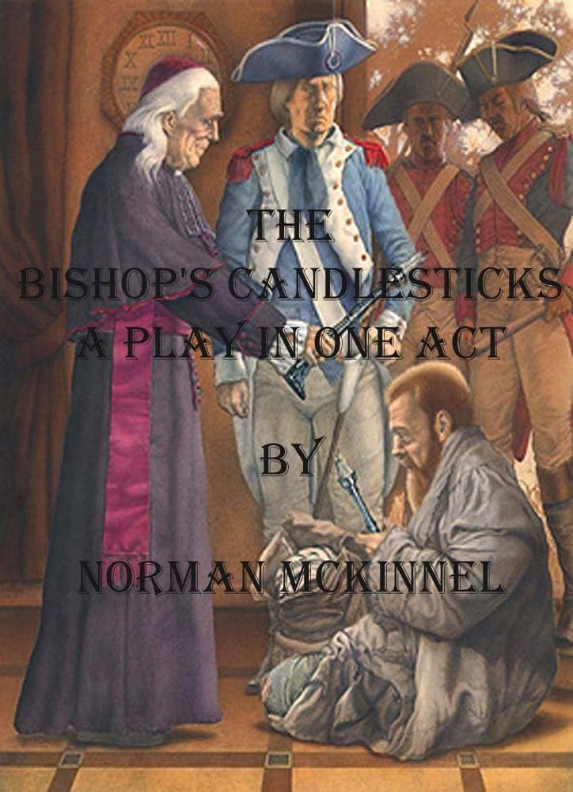

Persome: It’s very cold tonight. The snow is falling all over the
ground. Marie, isn’t the soup boiling yet?
Marie: Not yet, madam.
Persome: Well, it should have been ready already. You haven’t made a
nice fire, have you?
Marie: But madam, you yourself made the fire on.
Persome: Don’t talk to me like that. You are rude.
Marie: Yes, madam.
Persome: Then don’t let me scold you again.
Marie: No, madam.
Persome: I wonder where my brother is. It is after eleven o’clock.
(Looking at the clock) and no sign of him. Marie?
Marie: Yes, madam.
Persome: Did his lordship the Bishop leave any message for me?
Marie: No, madam.
Persome: Did he tell you where he was going?
Marie: Yes, madam.
Persome: “Yes madam (imitating). Then why haven’t you told me, stupid!
Marie: Madam didn’t ask me.
Persome: But that is no reason for your not telling me, is it?
Marie: Madam said only this morning I was not to chatter, so I thought—
Persome: Ah, my God, you thought! Ah! You are hopeless.
Marie: Yes, madam.
Persome: Don’t keep saying ‘yes madam,’ like a parrot, brainless.
Marie: No, madam.
Persome: Well, where did the Bishop say he was going?
Marie: to my mother’s house madam.
Persome: to your mother’s house. Indeed! Any why, may I ask
Marie: the bishop asked me how my mother was, and I told him my mother
was feeling very sick
Persome: you told him she was feeling very sick, did you? And so my
brother is kept out of his bed, and go out without eating because you
told him she was feeling poorly. How nice you are, aren’t you?
Marie: madam, the soup is boiling!
Persome: then pour it out, fool, and stop chatting. (Marie about to do
so) No, no, not like that, here let me do it. Meanwhile, put the
saltcellars on the table – the silver ones.
Marie: the silver ones madam
Persome: yes, the silver ones. Are you deaf as well as stupid?
Marie: the silver ones are sold, madam.
Persome: sold! (with horror) sold! Are you mad? Who sold them? Why were
they sold?
Marie: Monseigneur the Bishop told me this afternoon, while you were
out, to take them to Monseigneur Gervais, who has often admired them,
and sell them for as much as I could.
Persome: But you had no right to do so without asking me.
Marie (with awe): But, madam, Monseigneur the Bishop told me.
Persome: Monseigneur the Bishop is a-ahem! But-but what can he have
wanted with the money!
Marie: Pardon, madam, but I think it was for Mere Gringoire.
Persome: Mere Gringoire indeed! Mere Gringoire! What, the old witch who
lives at the top of the hill, and who says she is bedridden because she
is too lazy to do any work? And what did Mere Gringoire want with the
money, pray?
Marie: Madam, it was for the rent. The bailiff would not wait any
longer, and threatened to turn her out to-day if it were not paid, so
she sent little Jean to Monseigneur to ask for help.
Persome: Oh, mon Dieu! It is hopeless, hopeless. We shall have nothing
left. His estate is sold, his savings have gone. His furniture,
everything. Were it not for my little dot we should starve! And now my
beautiful-beautiful (sobs) salt-cellars. Ah, it is too much, too much.
(She breaks down crying.)
Marie: Madam, I am sorry, if I had known
Persome: Sorry, and why pray? If Monseigneur the Bishop chooses to sell
his salt cellars he may do so, I suppose. Go and wash your hands, they
are disgracefully dirty.
Marie: Yes, madam (going towards R.)
Bishop: Ah! How nice and warm it is in here! It is worth going out in
the cold for the sake of the comfort of coming in.
Bishop: Thank you, dear. (Looking at her.) Why, what is the matter? You
have been crying. Has Marie been troublesome, eh? (shaking his finger at
her) Ah!
Persome: No, it wasn’t Marie-but-but
Bishop: Well, well, you shall tell me presently! Marie, my child, run
home now; your mother is better. I have prayed with her, and the doctor
has been. Run home! (Marie putting on cloak and going.) And, Marie, let
yourself in quietly in case your mother is asleep.
Marie: Oh, thanks, thanks, Monseigneur.
Bishop: Here, Marie, take my comforter, it will keep you warm. It is
very cold to-night.
Marie: Oh, no Monseigneur! (shamefacedly).
Persome: What nonsense, brother, she is young, she won’t hurt.
Bishop: Ah, Persome, you have not been out, you don’t know how cold it
has become. Here, Marie, let me put it on for you. (Does so) There! Run
along little one.
Persome: Brother, I have no patience with you. There, sit down and take
your soup, it has been waiting ever so long. And if it is spoilt, it
serves you right.
Bishop: It smells delicious.
Persome: I’m sure Marie’s mother is not so ill that you need have
stayed out on such a night as this. I believe those people pretend to be
ill just to have the Bishop call on them. They have no thought of the
Bishop.
Persome: Well, for my part, I believe that charity begins at
home.
Bishop: And so you make me this delicious soup. You are very good to
me, sister.
Persome: Good to you, yes! I should think so. I should like to know
where you would be without me to look after you. The dupe of every idle
scamp or lying old woman in the parish!
Bishop: If people lie to me they are poorer, not I.
Persome: But it is ridiculous; you will soon have nothing left. You
give away everything, everything!!!
Bishop: My dear, there is so much suffering in the world, and I can do
so little (sighs), so very little.
Persome: Suffering, yes; but you never think of the suffering you cause
to those who love you best, the suffering you cause to me.
Bishop (rising): You, sister dear? Have I hurt you? Ah, I remember you
had been crying. Was it my fault? I didn’t mean to hurt you. I am
sorry.
Persome: Sorry. Yes. Sorry won’t mend it. Humph! Oh, do go on eating
your soup before it gets cold.
Bishop: Very well, dear. (Sits.) But tell me
Persome: You are like a child. I can’t trust you out of my sight. No
sooner is my back turned than you get that little minx Marie to sell the
silver salt-cellars.
Bishop: Ah, yes, the salt-cellars. It is a pity. You-you were proud of
them?
Persome: Proud of them. Why, they have been in our family for
years.
Bishop: Yes, it is a pity. They were beautiful; but still, dear, one
can eat salt out of china just as well.
Persome: Yes, or meat off the floor, I suppose. Oh, it’s coming to
that. And as for that old wretch, Mere Gringoire, I wonder she had the
audacity to send here again. The last time I saw her I gave her such a
talking to that it ought to have had some effect.
Bishop: Yes! I offered to take her in here for a day or two, but she
seemed to think it might distress you.
Persome: Distress me!!!
Bishop: And the bailiff, who is a very just man, would not wait longer
for the rent, so-so you see I had to pay it.
Persome: You had to pay it. (Gesture of comic despair.)
Bishop: Yes, and you see I had no money so I had to dispose off the
salt-cellars. It was fortunate I had them, wasn’t it? (Smiling) But I’m
sorry, I have grieved you.
Persome: Oh, go on! Go on! You are incorrigible. You’ll sell your
candlesticks next.
Bishop (with real concern): No, no, sister, not my candlesticks.
Persome: Oh! Why not? They would pay somebody’s rent, I suppose.
Bishop: Ah, you are good, sister, to think of that; but-but I don’t
want to sell them. You see, dear, my mother gave them to me on-on her
death-bed just after you were born, and-and she asked me to keep them in
remembrance of her, so I would like to keep them; but perhaps it is a
sin to set such store by them?
Persome: Brother, brother, you will break my heart (with tears in her
voice). There! Don’t say anything more. Kiss me and give me your
blessing. I’m going to bed. (He blesses her)
[Bishop makes the sign of the Cross and murmurs a blessing. Persome
locks up the cupboard door and goes R.]
Persome: Don’t sit up too long and tire your eyes.
Bishop: No, dear! Good night!
[Persome exits R.]
Bishop: (comes to table and opens a book, then looks up at the
candlesticks). They would pay somebody’s rent. It was kind of her to
think of that.
[He stirs the fire, trims the lamp, arranges some books and papers,
sits down, is restless, shivers slightly; the clock outside strikes
twelve and he settles down to read. Music during this. Enter a Convict
stealthily; he has a long knife and seizes the Bishop from behind]
Convict: If you call out you are a dead man!
Bishop: But, my friend, as you see, I am reading. Why should I call
out? Can I help you in any way?
Convict (hoarsely): I want food. I’m starving, I haven’t eaten anything
for three days. Give me food quickly, quickly, curse you!
Bishop (eagerly): But certainly, my son, you shall have food. I will
ask my sister for the keys of the cupboard. [Rising.]
Convict: Sit down!!! (The Bishop sits smiling.) None of that, my
friend! I’m too old a bird to be caught with chaff. You would ask your
sister for the keys, would you? A likely story! You would rouse the
house too. Eh? Ha! ha! A good joke truly. Come, where is the food? I
want no keys. I have a wolf inside me tearing at my entrails, tearing
me; quick, tell me; where the food is?
Bishop (aside): I wish Persome would not lock the cupboard. (Aloud)
Come, my friend, you have nothing to fear. My sister and I are alone
here.
Convict: How do I know that?
Bishop: Why, I have just told you.
[Convict looks long at the Bishop.]
Convict: Humph! I’ll risk it. (Bishop, going to door R.) But mind! Play
me false and as sure as there are devils in hell, I’ll drive my knife
through your heart. I have nothing to lose.
Bishop: You have your soul to lose, my son; it is of more value than my
heart. (At door R., calling.) Persome! Persome!
[The Convict stands behind him, with his knife ready.]
Persome (within): Yes, brother.
Bishop: Here is a poor traveller who is hungry. If you have not settled
as yet, will you come and open the cupboard and I will give him some
supper.
Persome (within): What, at this time of night? A pretty business truly.
Are we to have no sleep now, but to be at the beck and call of every
ne’er-do-well who happens to pass?
Bishop: But, Persome, the traveller is hungry.
Persome: Oh, very well. I am coming. (Persome enters R. She sees the
knife in the Convict’s hand.) (Frightened) Brother, what is he doing
with that knife?
Bishop: The knife-oh, well, you see, dear, perhaps he may have thought
that I-I had sold ours.
[Laughs gently.]
Persome: Brother, I am frightened. He glares at us like a wild beast
(aside to him).
Convict: Hurry, I tell you. Give me food or I’ll stick my knife in you
both and help myself.
Bishop: Give me the keys, Persome (she gives the keys to him). And now,
dear, you may go to bed.
[Persome going. The Convict springs in front of her.]
Convict: Stop! Neither of you shall leave this room till I do.
[She looks at the Bishop.]
Bishop: Persome, will you favour this gentleman with your company at
supper? He evidently desires it.
Persome: Very well, brother.
[She sits down at the table staring at the two.]
Bishop: Here is some cold pie and a bottle of wine and some
bread.
Convict: Put them on the table, and stand behind it so that I can see
you.
[Bishop does so and opens drawer in table, taking out knife and fork,
looking at the knife in Convict’s hand.]
Convict: My knife is sharp. (He runs his finger along the edge and
looks at them meaningfully.) And as for forks… (taking it up) (laughs)
Steel! (He throws it away). We don’t use forks in prison.
Persome: Prison?
Convict: (Cutting off an enormous slice from the pie he tears it with
his fingers like an animal. Then starts) What was that? (He looks at the
door.) Why the devil do you leave the window unshuttered and the door
unbarred so that anyone can come in? (shutting them.)
Bishop: That is why they are left open.
Convict: Well, they are shut now!
Bishop (sighs): For the first time in thirty years.
[Convict eats voraciously and throws a bone on the floor.]
Persome: Oh, my nice clean floor!
[Bishop picks up the bone and puts it on plate.]
Convict: You’re not afraid of thieves?
Bishop: I am sorry for them.
Convict: Sorry for them. Ha! Ha! Ha!
(Drinks from bottle,) That’s a good one. Sorry for them. Ha! Ha! Ha!
(Drinks) (suddenly) Who the devil are you?
Bishop: I am a Bishop.
Convict: Ha! Ha! Ha! A Bishop! Holy Virgin, a Bishop.
Bishop: I hope you may escape that, my son. Persome, you may leave us;
this gentleman will excuse you.
Persome: Leave you with
Bishop: Please! My friend and I can talk more-freely then.
[By this time, owing to his starving condition, the wine has affected
the Convict:]
Convict: What’s that? Leave us. Yes, yes, leave us. Good night. I want
to talk to the Bishop, The Bishop: Ha! Ha!
Bishop: Good night, Persome.
[Laughs as he drinks, and coughs.]
Convict (chuckling to himself): The Bishop: Ha! Ha! Well I’m-(Suddenly
very loudly) D’you know what I am?
Bishop: I think one who has suffered much.
Convict: Suffered? (puzzled) Suffered? My God, yes. (Drinks) But that’s
a long time ago. Ha! Ha! That was when I was a man. Now I’m not a man;
now I’m a number; number 15729, and I’ve lived in Hell for ten
years.
Bishop: Tell me about it-about Hell.
Convict: Why? (Suspiciously) Do you want to tell the police-to set them
on my track?
Bishop: No! I will not tell the police.
Convict: (looks at him earnestly). I believe you (scratching his head),
but damn me if I knew why.
Bishop: (laying his hand on the Convict’s arm). Tell me about the time,
the time before you went to Hell.
Convict: It’s been so long ago.... I forget; but I had a little
cottage, there were vines growing on it. (Dreamily) They looked pretty
with the evening sun on them, and, and.... there was a woman, she was
(thinking hard), she must have been my wife-yes. (Suddenly and very
rapidly). Yes, I remember! She was ill, we had no food, I could get no
work, it was a bad year, and my wife, my Jeanette, was ill, dying
(pause), so I stole to buy food for her. (Long pause. The Bishop gently
pats his hand.) They caught me. I pleaded with them, I told them why I
stole, but they laughed at me, and I was sentenced to ten years in the
prison hulks (pause), ten years in Hell. The night I was sentenced, the
gaoler told me-told me Jeanette was dead. (Sobs with fury) Ah, damn
them, damn them. God curse them all.
[He sinks on the table, sobbing.]
Bishop: Now tell me about the prison ship, about Hell.
Convict: Tell you about it? Look here, I was a man once. I’m a beast
now, and they made me what I am. They chained me up like a wild animal,
they lashed me like a hound. I fed on filth, I was covered with vermin,
I slept on boards, and when I complained, they lashed me again. For ten
years, ten years. Oh God! They took away my name, they took away my
soul, and they gave me a devil in its place. But one day they were
careless, one day they forgot to chain up their wild beast, and he
escaped. He was free. That was six weeks ago. I was free, free to
starve.
Bishop: To starve...
Convict: Yes, to starve. They feed you in Hell, but when you escape
from it you starve. They were hunting me everywhere and I had no
passport, no name. So I stole again. I stole these rags. I stole my food
daily. I slept in the woods, in barns, anywhere. I dare not ask for
work, I dare not go into a town to beg, so I stole, and they have made
me what I am, they have made me a thief. God curse them all.
[Empties the bottle and throws it into the fire-place R., smashing
it.]
Bishop: My son, you have suffered much, but there is hope for
all.
Convict: Hope! Hope! Ha! Ha! Ha!
[Laughs wildly.]
Bishop: You have walked far; you are tired. Lie down and sleep on the
couch there, and I will get you some coverings.
Convict: And if anyone comes?
Bishop: No one will come; but if they do, are you not my friend?
Convict: Your friend? (puzzled)
Bishop: They will not molest the Bishop’s friend.
Convict: The Bishop’s friend.
Bishop: I will get the coverings. [Exit L.]
[Scratching his head, utterly puzzled]
Convict: (looks after him, scratches his head) The Bishop’s friend! (He
goes to fire to warm himself and notices the candlesticks. He looks
round to see if he is alone, and takes them down, weighing them.)
Silver, by God, heavy. What a prize!
[He hears the Bishop coming, and in his haste drops one candlestick on
the table.]
[Enter the Bishop]
Bishop: (sees what is going on, but goes to the settee up L. with
coverings.) Ah, you are admiring my candlesticks. I am proud of them.
They were a gift from my mother. A little too handsome for this poor
cottage perhaps, but all I have to remind me of her. Your bed is ready.
Will you lie down now?
Convict: Yes, yes, I’ll lie down now. (puzzled) -Look here, why the
devil are you kind to me? (Suspiciously). What do you want? Eh?
Bishop: I want you to have a good sleep, my friend.
Convict: I believe you want to convert me; save my soul, don’t you call
it? Well, it’s no good-see? I don’t want any damned religion, and as for
the Church-bah! I hate the Church.
Bishop: That is a pity, my son, as the Church does not hate you.
Convict: You are going to try to convert me. Oh! Ha! ha! That’s a good
idea. Ha ! ha ! ha! No, no, Monseigneur the Bishop: I don’t want any of
your Faith, Hope, and Charity —see? So anything you do for me you’re
doing to the devil-understand? (defiantly)
Bishop: One must do a great deal for the devil in order to do a little
for God.
(angrily): I don’t want any damned religion, I tell you.
Bishop: Won’t you lie down now? It is late?
(grumbling): Well, alright, but I won’t be preached at, I-I-(on couch).
You’re sure no one will come?
Bishop: I don’t think they will; but if they do-you yourself have
locked the door.
Convict: Humph! I wonder if it’s safe. (He goes to the door and tries
it, then turns and sees the Bishop holding the covering, annoyed) Here!
you go to bed. I’ll cover myself. (The Bishop hesitates.) Go on, I tell
you.
Bishop: Good night, my son.
[Convict waits till he is off, then tries the Bishop’s door.]
[Exit L.]
Convict: No lock, of course. Curse it. (Looks round and sees the
candlesticks again.) Humph! I’ll have another look at them. (He takes
them up and toys with them.) Worth hundreds, I’ll warrant. If I had
these turned into money, they’d start me fair. Humph! The old boy’s fond
of them too, said his mother gave him them. His mother, yes. They didn’t
think of my mother when they sent me to Hell. He was kind to me too-but
what’s a Bishop for except to be kind to you? Here, cheer up, my hearty,
you’re getting soft. God! Wouldn’t my chain-mates laugh to see 15729
hesitating about collaring the plunder because he felt good. Good! Ha
ha! Oh, my God! Good! Ha! Ha! 15729 getting soft. That’s a good one. Ha!
Ha! No, I’ll take his candlesticks and go. If I stay here he’ll preach
me in the morning and I’ll get soft. Damn him and his preaching too.
Here goes!
[He takes the candlesticks, stows them in his coat, and cautiously
exits L.C. As he does so the door slams.]
Persome (without): Who’s there? Who’s there, I say? Am I to get no
sleep to-night? Who’s there, I say?
[Enter R, Persome] I’m sure I heard the door shut. (Looking round.) No
one here? (Knocks at the Bishop’s door L. Sees the candlesticks have
gone.) The candlesticks, the candlesticks. They are gone. Brother,
brother, come out. Fire, murder, thieves!
[Enter Bishop L.]
Bishop: What is it, dear, what is it? What is the matter?
Persome: He has gone. The man with the hungry eyes has gone, and he has
taken your candlesticks.
Bishop: Not my candlesticks, sister, surely not those. (He looks and
sighs.) Ah, that is hard, very hard, I………I-He might have left me those.
They were all I had (almost breaking down).
Persome: Well, but go and inform the police. He can’t have gone far.
They will soon catch him, and you’ll get the candlesticks back again.
You don’t deserve them, though, leaving them about with a man like that
in the house.
Bishop: You are right,
Persome: It was my fault. I led him into temptation.
Persome: Oh, nonsense I led him into temptation indeed. The man is a
thief, a common unscrupulous thief. I knew it the moment I saw him. Go
and inform the police or I will.
Bishop: [Going; but he stops her.] And have him sent back to prison?
(very softly) Sent back to Hell. No Persome: It is a just punishment for
me; I set too great store by them. It was a sin. My punishment is just;
but Oh God! it is hard, It is very hard. [He buries his head in his
hands.]
Persome: No, brother, you are wrong. If you won’t tell the police, I
will. I will not stand by and see you robbed. I know you are my brother
and my Bishop, and the best man in all France; but you are a fool, I
tell you, a child, and I will not have your goodness abused, I shall go
and inform the police (Going).
Bishop: Stop, Persome. The candlesticks were mine. They are his now. It
is better so. He has more need of them than me. My mother would have
wished it so, had she been here.
Persome: But-[Great knocking without.]
Sergeant (without): Monseigneur, Monseigneur, we have something for
you. May we enter?
Bishop: Enter, my son.
[Enter Sergeant and three Gendarmes with Convict bound. The Sergeant
carries the candlesticks.]
Persome: Ah, so they have caught you, villain, have they?
Sergeant: Yes, madam, we found this scoundrel slinking along the road,
and as he wouldn’t give any account of himself we arrested him on
suspicion. Holy Virgin, isn’t he strong and didn’t he struggle! While we
were securing him these candlesticks fell out of his pockets. (Persome
seizes them, goes to table, and brushes them with her apron lovingly.) I
remembered the candlesticks of Monseigneur, the Bishop, so we brought
him here that you might identify them, and then we’ll lock him up.
[The Bishop and the Convict have been looking at each other-the Convict
with dogged defiance.]
Bishop: But - but I don’t understand, this gentleman is my very good
friend.
Sergeant: Your friend, Monseigneur!! Holy Virgin! Well!!!
Bishop: Yes, my friend. He did me the honour to sup with me tonight,
and I-I have given him the candlesticks.
Sergeant (incredulously): You gave him-him your candlesticks? Holy
Virgin!
Bishop (severely): Remember, my son, that she is holy.
Sergeant (saluting): Pardon Monseigneur.
Bishop: And now I think you may let your prisoner go.
Sergeant: But he won’t show me his papers. He won’t tell me who he
is.
Bishop: I have told you he is my friend.
Sergeant: Yes, that’s all very well, but....
Bishop: He is your Bishop’s friend, surely, that is enough!
Sergeant: Well, but....
Bishop: Surely?
[A pause. The Sergeant and the Bishop look at each other.]
Sergeant: I-I-Humph! (To his men) Loose the prisoner. (They do so).
Right about turn, quick march!
[Exit Sergeant and Gendarmes. A long pause.]
Convict (very slowly, as if in a dream): You told them you had given me
the candlesticks- given me... them. By God!
Persome (shaking her fist at him and hugging the candlesticks to her
breast): Oh, you scoundrel, you pitiful scoundrel. You come here, and
are fed and warmed, and- and you thief.... you steal.... from your
benefactor. Oh, you blackguard!
Bishop: Persome, you are overwrought. Go to your room.
Persome: What, and leave you with him to be cheated again, perhaps
murdered? No, I will not.
Bishop (with slight severity): Persome, leave us. I wish it.
[She looks hard at him, then turns towards her door.]
Persome: Well, if I must go, at least I’ll take the candlesticks with
me.
Bishop: (More severely) Persome, place the candlesticks on that table
and leave us.
Persome: (Defiantly). I will not!
Bishop: (Loudly and with great severity). I, your Bishop, commands
it.
[Persome does so with great reluctance and exits R.]
Convict (shamefacedly): Monseigneur, I’m glad I didn’t get away with
them; curse me, I am, I’m glad.
Bishop: Now won’t you sleep here? See, your bed is ready.
Convict: No! (Looking at the candlesticks) No! No! I daren’t, I
daren’t. Besides, I must go on, I must get to Paris; it is big, and I-I
can be lost there. They won’t find me there. And I must travel at night.
Do you understand?
Bishop: I see-you must travel by night.
Convict: I-I didn’t believe there was any good in the world; one
doesn’t when one has been in Hell; but somehow I-I-know you’re good,
and-and it’s a queer thing to ask, but-could you... would you.... bless
me before I go? I-I think it would help me. I....
[Hangs his head very shamefacedly.]
[Bishop makes the sign of the Cross and murmurs a blessing.]
Convict (tries to speak, but a sob almost chokes him): Good
night.
[He hurries towards the door.]
Bishop: Stay, my son, you have forgotten your property (giving him the
candlesticks).
Convict: You mean me-you want me to take them?
Bishop: Please.... they may help you. (The Convict takes the
candlesticks in absolute amazement.) And, my son, there is a path
through the woods at the back of this cottage which leads to Paris; it
is a very lonely path and I have noticed that my good friends the
gendarmes do not like lonely paths at night. It is curious.
Convict: Ah, thanks, thanks, Monseigneur. I-I-(He sobs.) Ah, I’m a
fool, a child to cry, but somehow you have made me feel that.... that it
is just as if something had come into me as if I were a man again and
not a wild beast.
[The door at back is open, and the Convict is standing in it.]
Bishop (putting his hand on his shoulder): Always remember, my son,
that this poor body is the Temple of the Living God.
Convict (with great awe): The Temple of the Living God. I’ll
remember.
-------------------------------------------------************-------------------------------------------------